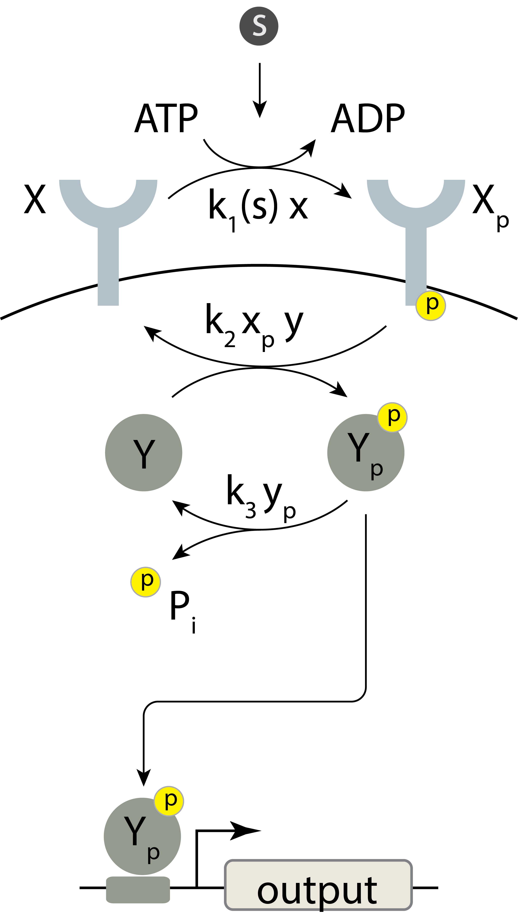
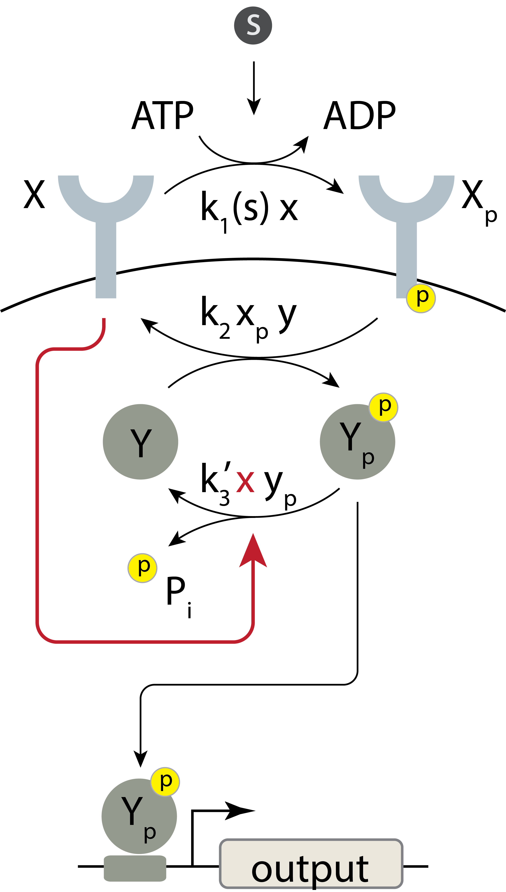
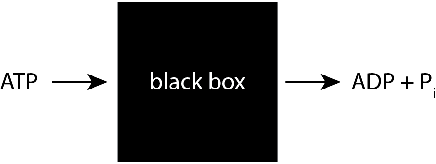
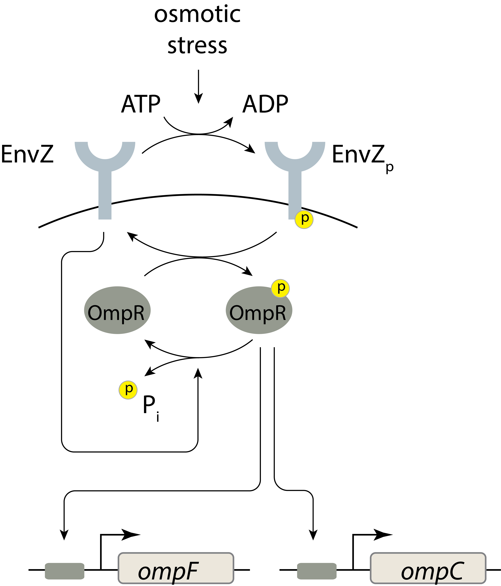

Bifunctional kinases that paradoxically phosphorylate and dephosphorylate their targets enable linear amplification that is robust to total protein copy numbers.
Concepts
Paradoxical regulation
Techniques
Applying conservation laws to simplify circuit analysis.
7.1 Amplifiers: the middle managers of biological circuitry
Cells sense and respond to a variety of external signaling molecules, including protein growth factors and hormones in multicellular organisms, and peptide or small molecule signals in bacteria. They also process internal signals encoded in the states and concentrations of proteins. In many cases, the numbers of molecules being sensed may be much smaller than the number of downstream molecules that need to be activated. For example, an incoming signal may need to ultimately activate thousands of copies of a transcription factor to bind to and activate all of the relevant genomic targets. This requires signal amplification.
One of the most dramatic examples of amplification occurs in the light-sensing cells of the retina, which amplify detection of a single photon into the hydrolysis of 10⁵ cyclic GMP molecules. This event, in turn, leads to a response that blocks more 10⁶ sodium ions from entering the cell over a period of one second. This amplification process is so strong that it can enable conscious perception of single photons (Tinsley et al. 2016).
Amplifiers play several distinct roles within circuits. Most obviously, they increase the magnitude of signals. Or, in some cases, they can also act as de-amplifiers (called attenuators) to reduce the amplitude of a signal. Second, amplifiers can reshape signals. For example, an ultrasensitive amplifier can allow a system to respond in a switch-like manner when inputs exceed a defined threshold. A third feature of many amplifiers is their ability to convert signals from one molecular form to another, e.g. from protein abundance to protein phosphorylation.
Amplifiers are like middle managers; they take results from one group, extract and emphasize or diminish certain features, and then pass the results along to others in a new form.
In this chapter, we will explore different types of amplifiers based on protein kinase cascades. These phosphorylation-based amplifiers can operate rapidly and directly, entirely at the protein level. They also play key roles in a variety of central biological processes. We note that other classes of systems, such as transcriptional regulation, can also perform amplification functions. We will focus on two of the most important classes of kinase amplifiers: two-component systems in prokaryotes and mitogen-activated protein (MAP) kinase cascades in eukaryotes. We will learn how these amplifiers can operate in a manner that is robust to their own component concentrations and how they can allow tuning of two key properties: gain and sensitivity.
7.2 Amplifiers are characterized by their transfer functions
Consider designing a biomolecular sensor module that encodes the concentration of an input signal in the concentration of a target protein. Cells have to do this all the time in order to transmit information about the external environment from sensory components at the periphery of the cell to regulatory components in the interior of the cell. As they convert information from the input to the effector molecule, in a process called signal transduction, they also amplify (or sometimes de-amplify) it, making the effector response larger (or smaller) than the input.
The relationship between the concentration of an input signal, \(x\), and the magnitude of the output response, \(y\), is the transfer function, \(y = f(x)\). Transfer functions have several key features:
Gain, \(g\), is the multiplier by which an output signal is increased relative to its input, \(g = f(x)/x\). For linear amplifiers, \(g\) is constant, but more generally it will depend on input level, \(x\). Values of \(g\) less than one represent attenuation.
The derivative of the transfer curve, \(\mathrm{d}f/\mathrm{d}x\), is the change in output produced by a small change in input. For a linear amplifier, this is identical to the gain, \(g\).
Related to the derivative is the sensitivity, which is logarithmic derivative of the transfer function:
Sensitivity quantifies the fractional change in output produced by a fractional change in input. For a linear transfer function the sensitivity is one. Note that a system can be linearly sensitive and still have a high gain. Sensitivity can strongly influence circuit behaviors. For example, in Chapter 3 we saw that ultrasensitive regulation (sensitivity > 1) was required for bistability in both the positive autoregulatory feedback loop and mutual repression toggle switch. On the other hand, we saw in Chapter 5 that incoherent feed-forward loops enable dosage compensation when regulation is linear (\(n=1\)).
To see an example, consider the activating Hill function as a transfer curve:
A note on terminology: The terms “transfer function,” “gain,” and “sensitivity” all have various meanings among and within the fields of signal processing, controls, and electronics, and even within systems biology. This may cause confusion when reading further about these concepts. We have defined these terms above and will use those definitions throughout this chapter and beyond.
Code
n_slider = bokeh.models.Slider(title="n", name="n", start=1, end=20, step=0.1, value=4)n = n_slider.valuex = np.logspace(-3, 3, 200)y = x ** n / (1+ x ** n)p = bokeh.plotting.figure( frame_width=350, frame_height=175, x_axis_label="x/k", x_axis_type="log", y_axis_type="log", x_range=[1e-3, 1e3],)p_hill = bokeh.plotting.figure( frame_width=350, frame_height=175, x_axis_label="x/k", y_axis_label="y = f(x)", x_axis_type="log",)p_hill.x_range = p.x_rangehill = x ** n / (1+ x ** n)deriv = n * x ** (n -1) / (1+ x ** n) **2gain = x ** (n -1) / (1+ x ** n)sensitivity = n / (1+ x ** n)cds = bokeh.models.ColumnDataSource(dict(x=x, hill=hill, deriv=deriv, gain=gain, sensitivity=sensitivity))p_hill.line( source=cds, x="x", y="hill", line_width=2, line_color="tomato",)p.line( source=cds, x="x", y="deriv", line_width=2, line_color=bokeh.palettes.Category10_3[0], legend_label="derivative / k",)p.line( source=cds, x="x", y="gain", line_width=2, line_color=bokeh.palettes.Category10_3[1], legend_label="gain / k",)p.line( source=cds, x="x", y="sensitivity", line_width=2, line_color=bokeh.palettes.Category10_3[2], legend_label="sensitivity",)p.legend.location ="bottom_center"js_code ="""let x = cds.data['x'];let hill = cds.data['hill'];let deriv = cds.data['deriv'];let gain = cds.data['gain'];let sens = cds.data['sensitivity'];let n = n_slider.value;for (let i = 0; i < x.length; i++) { let xn = Math.pow(x[i], n) hill[i] = xn / (1 + xn); deriv[i] = n * xn / x[i] / (1 + xn) / (1 + xn); gain[i] = xn / x[i] / (1 + xn); sens[i] = n / (1 + xn);}cds.change.emit();"""callback = bokeh.models.CustomJS(args=dict(cds=cds, n_slider=n_slider), code=js_code)n_slider.js_on_change("value", callback)bokeh_show(bokeh.layouts.column(n_slider, p, bokeh.layouts.Spacer(height=20), p_hill))
Figure 7.1: Derivative, gain, and sensitivity for a Hill function as a function of x.
For large Hill coefficient \(n\) (strong ultrasensitivity), the derivative is sharply peaked at \(x = k\), as we have seen before when studying Hill functions. This means that for small changes in input \(x\), there are large changes in output \(y\). The gain is peaked at \(x = k(n-1)^{1/n}\), going to zero for \(x \ll k\) and \(x \gg k\). Note that if \(n = 1\), the case with no ultrasensitivity, there is no peak gain, and the gain monotonically decreases with input level \(x\). Finally, the sensitivity has an elbow near \(x = k\), with the bend getting sharper as the Hill coefficient increases.
7.3 Tradeoffs between sensitivity and fidelity
Ultrasensitive transfer functions can reliably encode the qualitative information of whether an input signal is significantly above or below a particular threshold. However, it performs poorly in encoding the quantitative information of the input signal’s exact concentration. With an ultrasensitive response, most input concentrations either fail to activate or nearly saturate the response, so that a wide range of inputs map to similar outputs. On the other hand, within the sensitive part of the response curve, slight fluctuations in the input concentration lead to large variations in the output. As a result, ultrasensitive systems do a poor job at allowing the cell to confidently infer the input concentrations. The chemotaxis circuit we encountered in the previous chapter circumvents problem by continually adapting to ambient input signals, effectively keeping itself responsive to small relative changes in input, at the cost of throwing away information about absolute signal levels.
7.4 The perfect linear amplifier
With preliminaries out of the way, let’s consider one of the most fundamental amplification tasks: achieving perfect linear amplification using a protein circuit. A perfect linear amplifier would allow a cell to represent an extracellular molecular signal with intracellular proteins, with minimal distortion, and a fixed gain. However, building such an amplifier from proteins requires addressing two key questions: First, how can one achieve linear responses over a large dynamic range? Second, the amplifier’s own protein components—like any proteins—are subject to stochastic fluctuations, or “noise,” in their expression (see ?sec-noise for more on noise). How can one make the transfer curve robust to these unavoidable variations?
By analogy, imagine an electronic amplifier for an electric guitar. The first question is analogous to achieving high fidelity (“hi fi”). The second challenge would be analogous to making the amp operate the same way even if it is connected with a twisted or frayed cable that adds intermittent crackling noise.
Take a moment and think about how you might design such a perfect linear amplifier. To make the challenge more precise, think about an amplifier that uses protein phosphorylation. Its input could modulate the enzymatic activity of a kinase. Its output could be the concentration of the phosphorylated form of a second protein. There are many circuit configurations in which kinases could amplify signals by phosphorylating target proteins, but not all of these provide robust linear amplification.
7.5 Two-component signaling systems provide tunable linear amplification.
Two-component signaling systems are ubiquitous in prokaryotes and appear in eukaryotes as well. Their eponymous two components include a sensor kinase and a response regulator. The activity of the sensor kinase is typically controlled by an input signal. The sensor kinase in turn controls the phosphorylation level of the response regulator. In many but by no means all cases, the response regulator is a transcription factor, allowing the system to regulate gene expression.
Two-component systems perform three reactions: First, the histidine kinase autophosphorylates at an input-dependent rate on a histidine residue, effectively converting the input to a rate of autophosphorylation. Second, the phosphorylated kinase transfers phosphate groups to an aspartate residue on a second protein, termed the response regulator. Third, the phosphorylated response regulator can activate target genes or other processes. A single bacterial species may have tens of distinct two component systems. The chemotaxis system we discussed in the previous chapter is a special example of a two component signaling system, in which chemoattractant or repellent inputs control receptor activity, which phosphorylates the CheY response regulator to modulate the tumbling frequency output.
7.5.1 Two-component system input-output relationships generally depend on the concentrations of circuit components
The two component system architecture by itself is not sufficient for robust, linear amplification.
To see why, we first write down a simple model of the two-component system. We denote the concentration of the histidine kinase in its unphosphorylated and phosphorylated forms as \(x\) and \(x_p\), respectively. Similarly, we denote the concentrations of the two forms of the response regulator \(y\) and \(y_p\).
The model includes three reactions, each occurring with mass action kinetics controlled by a set of three rate constants, \(k_1(s)\), \(k_2\), and \(k_3\). The rate constant \(k_1(s)\) for autophosphorylation is dependent on the concentration \(s\) of the input.
Autophosphorylation of the histidine kinase. Reaction: X ⟶ Xₚ. Rate: \(k_1(s) x\).
Phosphotransfer. Reaction: Xₚ + Y ⟶ X + Yₚ. Rate: \(k_2 x_p y\).
Dephosphorylation of the response regulator. Reaction: Yₚ ⟶ Y. Rate: \(k_3 y_p\).
We also denote the total concentrations of the two components as \(x_\mathrm{tot} = x + x_p\) and \(y_\mathrm{tot} = y + y_p\).
These reactions and rates are summarized in the following diagram:

Figure 7.2: A minimal representation of a two-component signaling system. The signaling molecule s modulates autophorylation of histidine kinase X. X can then transfer phosphate to Y. Y may undergo dephosphorylation. The phosphorylated version of Y can serve to regulation gene expression.
We would like to determine the transfer curve of this system, i.e., how \(y_p\) depends on the input \(s\) at steady state. To do this, we take the usual approach, writing down differential equations for \(x_p\) and \(y_p\), and solving for their steady-state values. You can work out in ?exr-signaling-response-regulator-conc that in general the transfer curve is not linear and further that it depends on the \(x_\mathrm{tot}\), \(y_\mathrm{tot}\), both of which could fluctuate due to noise in gene expression. You can understand this most directly with the interactive plot.
Code
from IPython.display import HTMLHTML(filename='../figs/monofunctional_kinase_response.html')
Response of circuit with monofunctional kinase
Figure 7.3: Dimensionless effector concentration as a function of input signal s.
It would appear that two components are not enough for linearity and robustness. What would solve this conundrum? Adding more components, perhaps? It turns out nature found a more elegant solution, a design change that retains the simple two-component structure but makes the response linear and the entire transfer curve robust to changes in the total concentrations of its components.
7.5.2 Bifunctional kinases make two-component signaling systems robust to variation in their own components
Here is the trick: In many natural systems, the same histidine kinase protein responsible for transferring phosphates to the response regulator also has a distinct, and nearly opposite, activity. It is not only a kinase, but also a phosphatase (a protein that catalyzes the hydrolysis of the phosphate group from the phosphorylated protein). It is bifunctional. The phosphatase activity occurs only when the histidine kinase is not itself phosphorylated. Perversely, even as it giveth of the phosphate, it also taketh the phosphate away, consuming energy (ATP) in an example of a futile cycle,
A more general concept called paradoxical regulation, in which the same component can have two opposite effects on the same target.

Figure 7.4: A two-component signaling system with a bifunctional kinase. The circuit is the same as in Figure 7.2, except that X in its unphosphorylated state can serve as a phosphatase for the dephosphorylation of Y.
We can write out the reactions of this system as we did for the simple two-component system above, and solve for the steady state. The only change is in the dephosphorylation reaction, which now occurs at a rate proportional to the concentration of unphosphorylated kinase:
Dephosphorylation of the response regulator. Reaction: \(y_p \rightarrow y\). Rate: \(k_3' x y_p\).
Note that this assumes that the system is operating far from saturation, such that the reaction velocity is approximately proportional to both enzyme, \(x\), and substrate, \(y_p\). When we solve the revised set of equations at steady-state (as we will see below), we see something quite amazing;
\[\begin{align}
y_p = \frac{k_1(s)}{k_3'}, \text{ for } y < y_\mathrm{tot}.
\end{align}\]
The response \(y_p\) is directly proportional to input-modulated rate constant \(k_1(s)\). Further, the slope of this linear response is independent of \(x_\mathrm{tot}\) and \(y_\mathrm{tot}\). In other words, we now have a perfect linear amplifier whose transfer curve is, within some modest limits, independent of the total concentrations of both of its molecular components!
The following plot shows what this function looks like. The response for the circuit with a monofunctional kinase that we showed above is shown here in gray for reference.
Code
from IPython.display import HTMLHTML(filename='../figs/bifunctional_kinase_response.html')
Response of circuit with monofunctional kinase
Figure 7.5: Dimensionless effector concentration as a function of input signal s. The blue curve is for a bifunctional kinase, and the gray curve is for a monofunctional kinase.
An elegant shortcut to understanding how this behavior arises was introduced by (Shinar et al. 2007). One can think of the multi-reaction system as a “black box.” ATP goes in, to enable kinase autophosphorylation, and ADP and inorganic phosphate come out, through the phosphatase reaction.

Figure 7.6: A “black box” model of ATP consumption.
Conservation of mass dictates that the total flux of this phosphate into the system via ATP must match the total flux of Pi out of the system. The influx is \(k_1(s) x\) and the outflux is \(k_3' x y_p\). Setting these fluxes to be equal gives
\[
\begin{align}
k_1(s) x = k_3' x y_p,
\end{align}
\tag{7.4}\]
where \(s_\mathrm{max}\) is the maximum expected concentration of the input signaling molecule and we have assumed that \(k_1(s)\) is an increasing function.
The above analysis has revealed that in this model, linear amplification has the following features:
To achieve linearity, the cell must produce enough Y to avoid saturation over the anticipated range of input values. That is, \(y_\mathrm{tot}\) must be at least \(k_1(s_\mathrm{max}) / k_3'\).
It is also critical that only the dephosphorylated state of the bifunctional kinase X have phosphatase activity. If the phosphorylated state could act as a phosphatase, the inorganic phosphate balance would change, and we would lose the linear amplification feature.
The gain of the amplifier (the slope of the linear response) is inversely proportional to the dephosphorylation rate constant \(k_3'\). Reducing the rate of dephosphorylation increases the gain. No pain (dephosphorylation), plenty of gain!
All enzymes operate well below saturation such that the reaction rates approximate what we would expect from mass action kinetics. We would lose perfect linear amplification due to nonlinearities if they were not.
We have neglected some slow reactions. In particular, spontaneous dephosphorylation, independent of the histidine kinase, could reduce robustness to total protein levels.
Despite these restrictions and caveats, it is remarkable that a simple system can provide a function approximating perfect and robust linear amplification. This might explain the prevalence of two-component systems with bifunctional kinases.
7.5.3 An example paradoxical signaling system
The EnvZ-OmpR system in E. coli is a classic two component system with a bifunctional kinase. EnvZ is a histidine kinase membrane protein that senses osmotic stress. It phosphorylates OmpR, which in turn regulates expression of porin genes. At high osmolarity, the cell up-regulates a large porin called OmpF, while at lower osmolarity, it predominantly expresses OmpC, which has a smaller pore.

Figure 7.7: A schematic of the EnvZ-OmpR signaling system.
Batchelor and Goulian (Batchelor and Goulian 2003) engineered E. coli cells to express OmpR under the control of the lac promoter so they could systematically vary its expression by titrating the lactose analog IPTG. They then monitored expression of fluorescent reporter proteins expressed from OmpR’s target promoters. The compared target promoter activity at low osmolarity (in a minimal medium) and at high osmolarity (minimal medium with 15% sucrose). The result of their experiment is shown below (using data digitized from the paper).
Figure 7.8: Measurements digitized from (Batchelor and Goulian 2003). Different levels of expression are observed for high and low osmolarity, but the respective levels are invariant to OmpR concentration, consistent with the two-component model with a bifunctional kinase developed above.
Astoundingly, over at least an order of magnitude the target promoter activity is robust to OmpR concentration, sensitive only to the osmolarity of the surrounding environment. This suggests that the system indeed achieves robust regulation.
7.5.4 Two-component systems can have four components
Some two-component systems have more than two components, making the term a misnomer. For example, Bacillus subtilis cells use a four-component “phosphorelay” in which histidine kinases respond to environmental insults by autophosphorylating and transferring their phosphate to a second protein, from which it is then transfered to a third, and finally a fourth protein, which is thereby activated. This terminal protein, called Spo0A, triggers sporulation, the transformation of the living cell into a dormant spore. As far as we know, it remains unclear how 4-component phosphorelays differ from the simpler 2-component architecture in their amplification properties.
7.6 Conclusions
Kinase cascades are protein-based amplification systems. In two-component systems, the bifunctionality of the histidine kinase confers the remarkable ability of generaitng linear input-output relationships, whose gain can be tuned by a single rate constant. This ability allows a pathway to convert a signal from one form to another, accurately preserving information about its level. Amazingly, this entire input-output system can be robust to the levels of its own components. Perhaps it is at least in part the combination of simplicity of design and the general usefulness of this function that accounts for the tremendous proliferation of two component systems among bacteria. E. coli has ≈29 of them. B. subtilis has at least 30. And other species have even more.
Is phosphorylation the only way to make a biological amplifier? Probably not. For example, within the programmed cell death pathways there are cascades of proteases that activate each other. How do such protease cascades differ in their amplification abilities compared to phosphorylation cascades?
Batchelor, Eric, and Mark Goulian. 2003. “Robustness and the Cycle of Phosphorylation and Dephosphorylation in a Two-Component Regulatory System.”Proc. Natl. Acad. Sci. U. S. A. 100 (2): 691–96.
Shinar, Guy, Ron Milo, María Rodríguez Martínez, and Uri Alon. 2007. “Input–Output Robustness in Simple Bacterial Signaling Systems.”Proceedings of the National Academy of Sciences USA 105 (50): 19931–35. https://doi.org/10.1073/pnas.0706792104.
Tinsley, Jonathan N, Maxim I Molodtsov, Robert Prevedel, et al. 2016. “Direct Detection of a Single Photon by Humans.”Nat. Commun. 7 (July): 12172. https://doi.org/10.1038/ncomms12172.